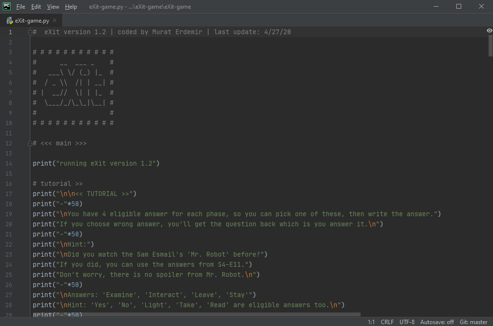
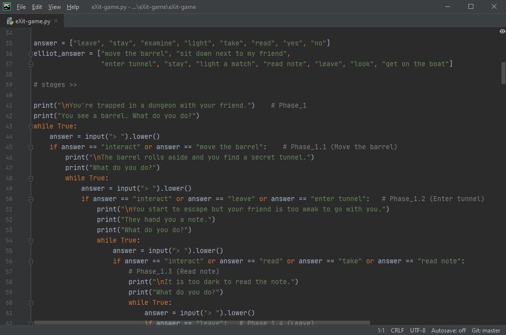

Jul 17, 2020
A Python Project: eXit-game
My Motivation
When I discovered Python, which was exactly all I was looking for. This language made sense to me, and seemed so powerful. So I devoted a lot of hours to learning Python. This situation made me finally at the point where I can build small projects.
Therefore, I developed this game to get more knowledge about Python algorithm and while loops. This development phase is made me so more fad.


I would like to thank my father, my girlfriend and my friend Ömer Onur Alpaslan who supported me in this process.
Click the links to Download eXit or View Source Code on GitHub.
Prerequesties
-
Python 3.8
-
Windows Vista and newer.
-
Mac OS X 10.9 (Mavericks) and later systems.
Planned future updates
-
UI to visualize app
-
Add new stages
Installing
!Important: The latest version of eXit was released on April 27, 2020. In the latest version, added a new executable file for Windows operating systems. The installation steps on the below only helps you to install Python. If you don't want to install Python, download the latest version and continue read from Game Tutorial.
Linux/UNIX Installation Steps
On Linux
Python comes preinstalled on most Linux distributions, and is available as a package on all others. However there are certain features you might want to use that are not available on your distro’s package. You can easily compile the latest version of Python from source.
In the event that Python doesn’t come preinstalled and isn’t in the repositories as well, you can easily make packages for your own distro. Have a look at the following links:
On FreeBSD and OpenBSD
-
FreeBSD users, to add the package use:
pkg install python3
-
OpenBSD users, to add the package use:
pkg_add -r python
pkg_add ftp://ftp.openbsd.org/pub/OpenBSD/4.2/packages/[insert your architecture here]/python-[version].tgz
For example i386 users get the 2.5.1 version of Python using:
pkg_add ftp://ftp.openbsd.org/pub/OpenBSD/4.2/packages/i386/python-2.5.1p2.tgz
On OpenSolaris
You can get Python from OpenCSW. Various versions of Python are available and can be installed with e.g. pkgutil -i python27
Windows Installation Steps
Four Python 3.8 installers are available for download - two each for the 32-bit and 64-bit versions of the interpreter. The web installer is a small initial download, and it will automatically download the required components as necessary. The offline installer includes the components necessary for a default installation and only requires an internet connection for optional features. See Installing Without Downloading for other ways to avoid downloading during installation.
After starting the installer, one of two options may be selected:

If you select “Install Now”:
-
You will not need to be an administrator (unless a system update for the C Runtime Library is required or you install the Python Launcher for Windows for all users)
-
Python will be installed into your user directory
-
The Python Launcher for Windows will be installed according to the option at the bottom of the first page
-
The standard library, test suite, launcher and pip will be installed
-
If selected, the install directory will be added to your
PATH
-
Shortcuts will only be visible for the current user
Selecting “Customize installation” will allow you to select the features to install, the installation location and other options or post-install actions. To install debugging symbols or binaries, you will need to use this option.
To perform an all-users installation, you should select “Customize installation”. In this case:
-
You may be required to provide administrative credentials or approval
-
Python will be installed into the Program Files directory
-
The Python Launcher for Windows will be installed into the Windows directory
-
Optional features may be selected during installation
-
The standard library can be pre-compiled to bytecode
-
If selected, the install directory will be added to the system
PATH
-
Shortcuts are available for all users
Mac OS X Installation Steps
Mac OS X 10.8 comes with Python 2.7 pre-installed by Apple. If you wish, you are invited to install the most recent version of Python 3 from the Python website (https://www.python.org). A current “universal binary” build of Python, which runs natively on the Mac’s new Intel and legacy PPC CPU’s, is available there.
What you get after installing is a number of things:
-
A
Python 3.8 folder in your Applications folder. In here you find IDLE, the development environment that is a standard part of official Python distributions; PythonLauncher, which handles double-clicking Python scripts from the Finder; and the “Build Applet” tool, which allows you to package Python scripts as standalone applications on your system.
-
A framework
/Library/Frameworks/Python.framework, which includes the Python executable and libraries. The installer adds this location to your shell path. To uninstall MacPython, you can simply remove these three things. A symlink to the Python executable is placed in /usr/local/bin/.
The Apple-provided build of Python is installed in /System/Library/Frameworks/Python.framework and /usr/bin/python, respectively. You should never modify or delete these, as they are Apple-controlled and are used by Apple- or third-party software. Remember that if you choose to install a newer Python version from python.org, you will have two different but functional Python installations on your computer, so it will be important that your paths and usages are consistent with what you want to do.
IDLE includes a help menu that allows you to access Python documentation. If you are completely new to Python you should start reading the tutorial introduction in that document.
If you are familiar with Python on other Unix platforms you should read the section on running Python scripts from the Unix shell.
Game Tutorial
You have 4 eligible answer for each phase, so you can pick one of these, then write the answer.
If you choose wrong answer, you'll get the question back which is you answer it.
!Hint: Did you watch the Sam Esmail's 'Mr. Robot' before? If you did, you can use the answers from S4-E11.
Don't worry, there is no spoiler from Mr. Robot.
Answers:
-
Leave
-
Stay
-
Examine
-
Interact
!Hint: Yes, No, Light, Take, Read are eligible answers too.
Credits
License
MIT License
The eXit is licensed under the MIT License which is a short and simple permissive license with conditions only requiring preservation of copyright and license notices. Licensed works, modifications, and larger works may be distributed under different terms and without source code.
Please see LICENSE.md